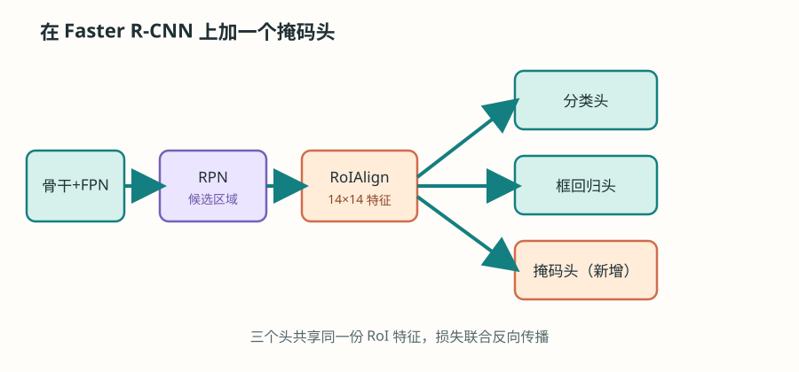
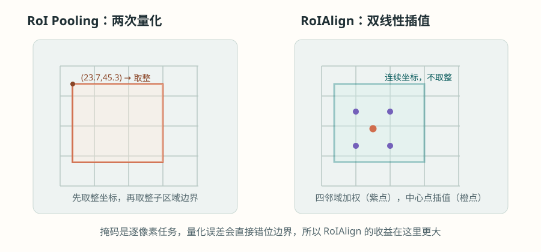
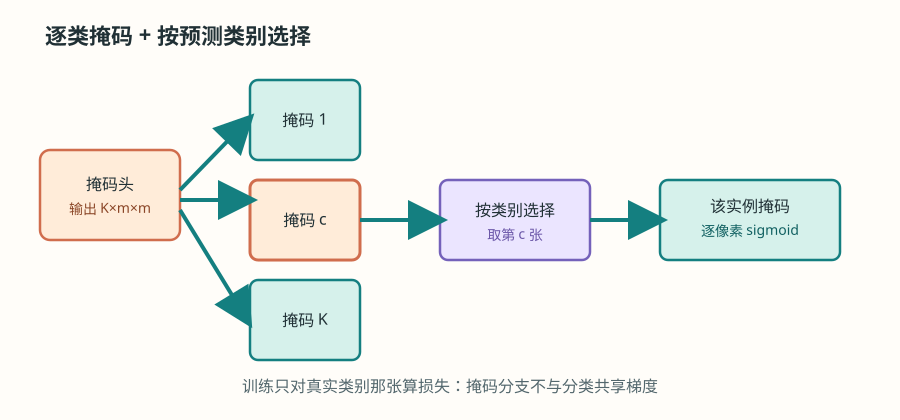

CHAPTER 21 · MASK R-CNN
Mask R-CNN：在检测器上长出实例掩码
Mask R-CNN 在 Faster R-CNN 上并行增加一个掩码分支，并把它赖以对齐特征的 RoI Pooling 换成不做量化的 RoIAlign。两个小改动，让实例分割第一次既简洁又高精度，并可直接扩展到人体关键点。
在检测器上加一个并行掩码分支
Faster R-CNN 已经能为每个候选区域分类并回归框。Mask R-CNN（He 等，ICCV 2017）做了一个自然的扩展：既然已经对每个候选做了分类与定位，为什么不顺便预测一个像素级掩码？它在 Faster R-CNN 的两阶段骨架上并行增加第三个分支（掩码预测），形成“分类 + 框回归 + 掩码”三头结构。

掩码分支让检测器能输出“每个实例的精确轮廓”，这正是实例分割需要的。Mask R-CNN 的改动可以用“最小”形容，但它需要先解决一个前提问题：特征与像素坐标的对齐。这引出了它的核心技术贡献 RoIAlign。
RoIAlign：取消量化，改用双线性插值
Faster R-CNN 用 RoI Pooling 从共享特征图上为每个候选取固定尺寸特征，但它做了两次量化：先把候选框的浮点坐标取整到特征图网格，再把候选划成 k×k 子区域时把每个子区域边界取整。对分类和框回归，一两像素的偏差还能容忍；对像素级掩码，它相当于先把坐标“对齐错了”再预测，边界会明显失真。
RoIAlign 取消全部取整：对每个子区域内固定数量的采样点，用双线性插值从特征图上取其精确值，再取平均或最大值。坐标始终保持连续，因而不引入量化误差。

def bilinear_sample(feat, y, x):
# feat 是二维网格（行=y, 列=x）；坐标 y,x 为浮点数，直接插值
y0, x0 = int(y), int(x)
y1, x1 = y0 + 1, x0 + 1
assert 0 <= y0 and y1 < len(feat) and 0 <= x0 and x1 < len(feat[0])
wy, wx = y - y0, x - x0
top = (1 - wx) * feat[y0][x0] + wx * feat[y0][x1]
bot = (1 - wx) * feat[y1][x0] + wx * feat[y1][x1]
return (1 - wy) * top + wy * bot
feat = [[0.0, 0.0, 0.0], [0.0, 4.0, 0.0], [0.0, 0.0, 0.0]]
assert bilinear_sample(feat, 1.0, 1.0) == 4.0 # 整数点即原值
assert abs(bilinear_sample(feat, 1.0, 1.5) - 2.0) < 1e-12 # 中点 = 两侧平均
# 两次量化会把同一个浮点坐标归到同一格；插值则保留差异
assert bilinear_sample(feat, 1.0, 1.5) != bilinear_sample(feat, 1.0, 1.0)
print("sample(1.0,1.5)=", bilinear_sample(feat, 1.0, 1.5))三任务损失 L = L_cls + L_box + L_mask
Mask R-CNN 的总损失是三个任务损失的和，三项默认权重相等（均为 1）：
分类用交叉熵，框回归用 Smooth L1，掩码用逐像素二值交叉熵；三项权重相等，论文未引入额外的平衡系数。
| 损失项 | 监督信号 | 作用 |
|---|---|---|
| L_cls | 类别标签 | 判断 RoI 中的物体类别 |
| L_box | 框偏移（仅正样本） | 精调检测框位置 |
| L_mask | 每个类别的二值掩码（仅正样本） | 逐像素预测物体轮廓 |
注意两处只在正样本上生效：框回归与掩码损失都不作用于负样本；分类损失则对所有采样 RoI 生效。
逐类二值掩码与分类解耦
掩码分支为每个 RoI 输出一个形状为 K×m×m 的预测（K 为类别数，m×m 常为 28×28）：每个类别一张独立的二值掩码。关键设计在于它与分类解耦——掩码分支并不先拿分类结果再去生成掩码，而是为所有类别都产生一张掩码，最终由分类分支选中的类别 c 决定使用第 c 张。

这样做有两个好处。其一，任务间不互相干扰：掩码只学“这个形态的物体长什么样”，不受分类对错的梯度污染。其二，避免了类别间竞争：因为每类是独立的二值 sigmoid 而不是互斥的 softmax，一个像素可以同时属于多张类别掩码，不需要在类别间做归一化。代价是参数与计算量随 K 增长。
训练与推理流程
训练流程与 Faster R-CNN 几乎一样，只是多了一个掩码分支：图像过骨干网络（论文常用 ResNet+FPN）得到多尺度特征图；RPN 生成候选；候选经 RoIAlign 提取固定尺寸特征（如 14×14）；这些特征同时送入分类、框回归和掩码三个头，三个损失联合反向传播。训练时只有正样本 RoI 参与框回归与掩码损失（论文以 IoU 阈值与采样配置定义正负，具体数值是默认设置而非通用常数）。
推理时先做检测：RPN 产生提议，分类与框回归分支先过滤低置信预测，再对保留下来的提议运行掩码分支，最后用 NMS 去重，输出每个实例的类别、置信度、框与掩码。这种“先检测后掩码”的顺序让大部分被过滤的提议不必跑掩码头，是两阶段架构的一种效率考量。论文报告的 COCO 精度与速度依赖主干网络、训练日程与硬件，比较时需对齐口径，本页不固化具体数值。
扩展到人体关键点
Mask R-CNN 的三头结构可以自然扩展到更多任务。论文展示的范例是人体关键点检测：在分类、框回归、掩码之外再加第四个分支，对每个 RoI 输出 K 张关键点热力图（COCO Keypoint 为 17 个人体关节点），热力图的峰值位置即关节坐标。这使一个模型能同时检测人体框、分割人体轮廓并预测 17 个关节点。
这个扩展揭示了更普遍的设计哲学：把视觉任务拆成“区域提议 + 区域分析”的通用范式。只要新增一个并行的分析头，就能在同一框架内完成类别、掩码、关键点、姿态、深度等不同输出。“即插即用”的灵活性是 Mask R-CNN 影响力的重要来源。
影响与局限
Mask R-CNN 常在文献中被描述为实例分割的里程碑：它以简洁的改动把检测与分割统一到一个可训练框架中，并提供了被广泛复用的开源实现（Detectron / Detectron2）。它的 RoIAlign 后来成为两阶段检测与分割的标配组件。
但它也有明确边界：
- 速度：两阶段架构天然比单阶段慢，实时性要求高的场景（如 30+ FPS）可能不适用。
- 小物体：RoIAlign 改善了对齐，但小物体下采样后在特征图上像素极少，掩码可用信息不足，效果仍受限。
- 只处理 things：实例分割本身只定义在可数物体上，天空、路面等无定形区域不属于它的目标——这是任务定义，不是模型缺陷。全景分割（第 22 章）把 things 与 stuff 合并处理。
它的方法启示是：最好的创新不总是新架构，也可以是在成熟框架上做恰到好处的扩展——新增一个分支、把有损的量化换成无损插值。
检查理解：为什么 RoIAlign 对掩码分支比对分类分支更重要？
分类只需要大致区域信息，一两像素偏差无伤；掩码是逐像素预测，本身就依赖坐标对齐，RoI Pooling 的两次量化会直接错位边界，造成掩码失真。RoIAlign 用双线性插值保留亚像素精度，所以对像素级任务收益更大。
原始资料与口径
本页的三头结构、RoIAlign、掩码解耦与关键点扩展依据 Mask R-CNN 原论文；COCO 精度与速度与主干、训练日程和硬件相关，未在本页固定。